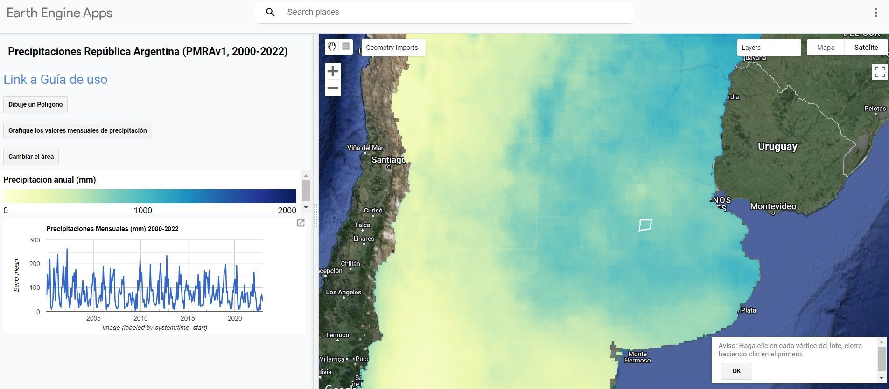

Procesamiento de Datos de Precipitación PMRA: De Rasters Satelitales a Insights Agrícolas
Al evaluar campos para arrendamiento en Argentina, siempre surge una pregunta: ¿cuánta lluvia recibe realmente esta zona? El problema es que las estaciones meteorológicas terrestres son escasas y no cubren la mayoría de las áreas rurales. Los datos satelitales como ERA5 tienen baja resolución espacial y precisión cuestionable para decisiones locales.
La buena noticia es que el dataset PMRA (Precipitaciones Mensuales de la República Argentina) de CONICET resuelve esto. Combina mediciones terrestres con cuatro productos globales de precipitación mediante regresión de random forest. Esto nos da datos de precipitación con resolución de 5km para cada rincón de Argentina desde 2000 hasta 2023.
Pero hay un desafío: los datos vienen como 288 archivos raster individuales. Un archivo por mes durante 24 años. Trabajar con ellos uno por uno es impracticable cuando necesitás analizar tendencias, calcular estadísticas o comparar regiones.
Por Qué Esto Importa para las Operaciones Agrícolas
En mi rol liderando innovación en una empresa agrícola, evaluamos constantemente nuevas tierras para arrendamiento. Entender los patrones de precipitación es crítico para:
- Estimar el potencial de rendimiento de cultivos en regiones desconocidas
- Evaluar el riesgo de sequía para decisiones de seguros
- Planificar estrategias de rotación basadas en la distribución histórica de lluvias
Sin datos completos de precipitación, estamos tomando decisiones costosas con información incompleta. PMRA llena ese vacío, pero solo si podemos procesarlo eficientemente.
El Dataset PMRA: Con Qué Estás Trabajando
El dataset PMRA proporciona datos mensuales de precipitación con resolución de 5km en toda Argentina. Cada archivo GeoTIFF cubre el país entero para un mes. La convención de nombres sigue este patrón: PMRA_[mes]_[año].tif.
Descargá el dataset completo desde la carpeta de Drive de CONICET. Obtendrás 288 archivos que totalizan varios gigabytes con datos de precipitación.
Además, desarrollaron una app en Google Earth Engine que permite visualizar los 23 mapas anuales de precipitación, delimitar un área de interés y generar un gráfico de la serie temporal de precipitaciones mensuales

La ventaja clave sobre ERA5 u otros productos satelitales es la combinación de datos de campo con datos satelitales. Este enfoque híbrido entrega mejor precisión local sin requerir una estación meteorológica en tu área específica.
Por Qué XArray Cambia Todo
La mayoría de los profesionales GIS están familiarizados con trabajar con rasters individuales usando herramientas como rasterio o GDAL. El flujo de trabajo estándar se ve así:
- Abrir archivo raster
- Extraer datos
- Procesar
- Cerrar archivo
- Repetir 287 veces más
Este enfoque se rompe cuando necesitás analizar patrones temporales. XArray trata tus 288 rasters como un único dataset multidimensional organizado por tiempo, latitud y longitud.
En lugar de gestionar 288 archivos, trabajás con una sola estructura de datos unificada. Esto hace que las consultas temporales sean instantáneas: "¿Cuál fue la precipitación promedio en esta ubicación en todos los eneros?" se convierte en una sola línea de código.
Configuración del Entorno
Primero, instalá las librerías necesarias:
Las importaciones principales para este flujo de trabajo:
import rioxarray
import numpy as np
import xarray as xr
import matplotlib.pyplot as plt
import os, glob
from pathlib import Path
import pandas as pd
import geopandas as gpd
import rasterio
import datetime
from dotenv import load_dotenv
load_dotenv()
xr.set_options(keep_attrs=True, display_expand_data=False)
Uso python-dotenv para mantener las rutas de archivos en variables de entorno en lugar de hardcodearlas. Esto hace que el código sea portable entre diferentes máquinas y mantiene las rutas sensibles fuera del control de versiones.
Cargando y Organizando 288 Rasters
El primer desafío es leer todos los archivos raster y organizarlos cronológicamente. Los nombres de archivo contienen el mes y el año, pero necesitamos parsearlos a objetos datetime correctos.
rasters_path = os.getenv('RASTERS_PATH')
raster_files = str(Path(rasters_path) / '*.tif')
file_names = [os.path.basename(x) for x in glob.glob(raster_files)]
file_paths = [os.path.abspath(x) for x in glob.glob(raster_files)]
months_str_list = ['ene', 'feb', 'mar', 'abr', 'may', 'jun',
'jul', 'ago', 'sep', 'oct', 'nov', 'dic']
months_num_list = range(1, 13)
my_dict = dict(zip(months_str_list, months_num_list))
dates = []
for file in file_names:
file_name = Path(file).name
month_str = file_name[5:8]
year = file_name[-8:-4]
for key, value in my_dict.items():
if month_str == key:
month = value
date = pd.to_datetime(f'{year}-{month}')
dates.append(date)
Esto extrae las abreviaturas de meses en español y los años de los nombres de archivo, luego los convierte a objetos datetime de Python. Estos se convierten en la dimensión temporal de nuestro dataset XArray.
Construyendo el Dataset XArray
Aquí es donde XArray muestra su poder. En lugar de iterar sobre archivos, concatenamos todos los rasters a lo largo de la dimensión temporal en una sola operación:
time_var = xr.Variable('time', dates)
geotiffs_da = xr.concat([rioxarray.open_rasterio(i) for i in file_paths],
dim=time_var)
geotiffs_ds = geotiffs_da.to_dataset("band")
geotiffs_ds = geotiffs_ds.rename({1: 'precipitacion'})
Lo que obtenemos es un Dataset con dimensiones (time: 288, y: 851, x: 713). Eso son 288 meses, 851 puntos de latitud y 713 puntos de longitud. Cada píxel ahora tiene un historial completo de precipitaciones de 24 años.
La estructura de salida se ve así:
<xarray.Dataset>
Dimensions: (time: 288, y: 851, x: 713)
Coordinates:
* x (x) float64 -73.86 -73.82 -73.77 ... -52.75 -52.71 -52.66
* y (y) float64 -55.4 -55.36 -55.31 ... -21.22 -21.18 -21.13
spatial_ref int64 0
* time (time) datetime64[ns] 2001-05-01 2015-05-01 ... 2018-05-01
Data variables:
precipitacion (time, y, x) float32 nan nan nan nan nan ... nan nan nan nan
Exportando a NetCDF para Reutilización
Una vez que construiste el dataset XArray, guardalo como NetCDF. Este es un formato binario autodescriptivo diseñado para datos científicos:
out_file = Path(raster_files).parent.parent / 'precipitaciones_arg_PMRA.nc'
geotiffs_ds.to_netcdf(out_file)
Los archivos NetCDF preservan todos los metadatos y se cargan mucho más rápido que procesar 288 rasters individuales. La próxima vez que necesites estos datos, podés cargar el dataset completo de 24 años en segundos en lugar de minutos.
Convirtiendo a DataFrame para Análisis
XArray es genial para operaciones espaciales, pero la mayoría de las herramientas de análisis esperan datos tabulares. Convertir a un DataFrame de Pandas te da acceso al ecosistema completo de librerías de ciencia de datos de Python:
precipitacion_df = geotiffs_ds.to_dataframe().reset_index()
precipitacion_df = precipitacion_df[['time', 'x', 'y', 'precipitacion']]
precipitacion_df = precipitacion_df.dropna()
precipitacion_df.precipitacion = precipitacion_df.precipitacion.astype('int8')
Esto crea un DataFrame de más de 40 millones de filas con columnas para tiempo, coordenadas y valores de precipitación. Cada fila representa un píxel en un punto en el tiempo.
El paso .dropna() es importante porque muchos píxeles caen fuera de las fronteras de Argentina y contienen valores nulos. Eliminarlos reduce el tamaño del archivo y acelera el análisis.
Creando un GeoDataFrame para Análisis Espacial
Si necesitás realizar operaciones espaciales como overlays o spatial joins, convertí a GeoDataFrame:
from shapely.geometry import Point
precipitacion_df['geometry'] = [Point(xy) for xy in zip(precipitacion_df['x'],
precipitacion_df['y'])]
gdf = gpd.GeoDataFrame(precipitacion_df)
Esto agrega una columna de geometría con objetos Point para cada par de coordenadas. Ahora podés:
- Hacer spatial join con límites de campos
- Filtrar por región usando polígonos
- Calcular estadísticas zonales para áreas específicas
- Exportar a formatos GIS como GeoPackage o Shapefile
out_file = Path(raster_files).parent.parent / 'precipitaciones_arg_PMRA.gpkg'
gdf.to_file(out_file, driver='GPKG')
Aplicación Real: Evaluación de Campos
Cuando evaluamos un campo potencial para arrendamiento, ejecuto este flujo de trabajo para extraer datos de precipitación para esa ubicación específica. El proceso toma minutos:
- Cargar el límite del campo como un polígono
- Filtrar espacialmente el GeoDataFrame a puntos dentro del límite
- Agrupar por tiempo y calcular la precipitación media
- Generar estadísticas mensuales y anuales
- Comparar contra benchmarks regionales
Esto nos da un historial de precipitaciones de 24 años para un campo que nunca cultivamos. Podemos identificar años propensos a sequía, calcular la lluvia de la temporada de crecimiento y evaluar la variabilidad.
Sin los datos de PMRA, estaríamos dependiendo de la estación meteorológica más cercana, que podría estar a 50km en un microclima diferente. Con PMRA, tenemos datos específicos del sitio con resolución de 5km.
Conclusiones Clave
No necesitás estaciones meteorológicas para analizar precipitaciones en cualquier lugar de Argentina. PMRA proporciona datos validados de alta resolución que combinan la precisión de mediciones terrestres con la cobertura de datos satelitales.
XArray es la herramienta correcta para este trabajo porque maneja datos geoespaciales multidimensionales de forma nativa. Intentar procesar 288 rasters individualmente es ineficiente y propenso a errores.
Los formatos de salida importan. NetCDF para recarga rápida, DataFrames para análisis estadístico, GeoDataFrames para operaciones espaciales. Elegí el formato que se ajuste a tu flujo de trabajo posterior.
Próximos Pasos
Si estás trabajando con datos agrícolas en Argentina y necesitás incorporar análisis de precipitación en tu toma de decisiones, este flujo de trabajo es un punto de partida. El mismo enfoque funciona para otros datasets de series temporales grillados como temperatura, NDVI o humedad del suelo.
Siempre me interesa discutir cómo el análisis de datos espaciales puede mejorar las operaciones agrícolas. Si estás enfrentando desafíos similares o querés explorar cómo estas técnicas se aplican a tu caso de uso específico, conectemos.
Agendar Llamada Introductoria Gratuita
También podés encontrarme en LinkedIn donde comparto más sobre GIS, Python e innovación agrícola.